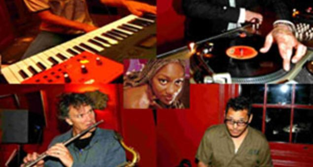

Eon Beats & Hipstones join forces for Basement gig


In a gig that will see over sixteen performers on stage on the one night, two of Sydney’s biggest funk and soul acts Eon Beats and the Hipstones will be combining for a huge night of modern dance sounds.
Eon Beats are already Basement favourites, having been on the scene since the late 90’s, released a number of albums and played more than a few memorable gigs at the classic Sydney venue. The Hipstones on the other hand are the – œup and comers’, having just released their debut CD Something’s Gonna Start which features a mix of contemporary pop grooves and classic soul melodies.
For a shot of funk and soul that’s distinctly Sydney, get on down to the Basement on Saturday 2nd June to check out the Eon Beats & Hipstones double bill.